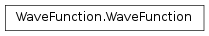
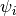
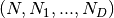
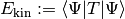
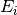
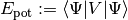
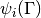

WaveFunction¶
About the WaveFunction class¶
The WaveBlocks Project
@author: R. Bourquin @copyright: Copyright (C) 2010, 2011, 2012, 2013, 2014, 2015 R. Bourquin @license: Modified BSD License
Inheritance diagram¶

Class documentation¶
- class WaveBlocksND.WaveFunction(parameters)¶
This class represents a vector valued wavefunction
 as used in the vector valued time-dependent Schroedinger equation. The
state consists of the components
as used in the vector valued time-dependent Schroedinger equation. The
state consists of the components  to
to
 .
.- get_grid()¶
Return the Grid instance representing the grid
 .
The wavefunction is evaluated on the grid nodes to get
.
The wavefunction is evaluated on the grid nodes to get  .
.
- get_number_components()¶
The number of components  the vector
consists of.
- get_values(components=None, flat=None)¶
Get the wavefunction values
 for each
component of .
for each
component of .Parameters: - components (A single integer or a list of integers. If set to
None (default) we return the data for all components.) – The components
 for which we want to get
the wavefunction values .
for which we want to get
the wavefunction values . - flat (Boolean or None , default is None.) – Whether to return the wavefunction with a hypercubic
 shape or a flat
 shape.
shape.
Returns: A list of the values for all components
.- components (A single integer or a list of integers. If set to
None (default) we return the data for all components.) – The components
- kinetic_energy(kinetic, summed=False)¶
Calculate the kinetic energy  of the different components .
Parameters: - kinetic (A KineticOperator instance.) – The kinetic energy operator
 .
. - summed – Whether to sum up the kinetic energies  of the individual components . Default is False.
Returns: A list with the kinetic energies of the individual components or the overall kinetic energy of the wavefunction. (Depending on the optional arguments.)
- kinetic (A KineticOperator instance.) – The kinetic energy operator
- norm(values=None, summed=False, components=None)¶
Calculate the
 norm of the whole vector values wavefunction
or some individual components . The calculation
is done in momentum space.
norm of the whole vector values wavefunction
or some individual components . The calculation
is done in momentum space.Parameters: - values – Allows to use this function for external data, similar to a static function.
- summed (Boolean, default is False.) – Whether to sum up the norms of the individual components.
- components (A single integer or a list of integers. If set to None (default) we compute the norm for all components.) – The components of which the norms are calculated.
Returns: The
norm of or a list of
norms of the specified components .
- potential_energy(potential, summed=False)¶
Calculate the potential energy  of the different components .
Parameters: - potential – The potential energy operator
 .
. - summed – Whether to sum up the potential energies of the individual components . Default is False.
Returns: A list with the potential energies of the individual components or the overall potential energy of the wavefunction. (Depending on the optional arguments.)
- potential – The potential energy operator
- set_grid(grid)¶
Assign a new grid
to this WaveFunction instance.Note: The user of this class has to make sure that the grid
and
the wavefunction values are consistent with each other!Parameters: grid – A new Grid instance.
- set_values(values, components=None, flat=None)¶
Assign new wavefunction values  for each component
of to the current WaveFunction instance.Parameters: - values (Each entry of the list has to be an ndarray.) – A list with the new values of all components we want to change.
- components (A single integer or a list of integers. If set to
None (default) we set the data for all components.) – The components for which we want to set
the new wavefunction values .
- flat (Boolean or None , default is None.) – Whether the wavefunction is given in hypercubic
shape or a flat
shape. Note that this has no effect yet.
Note: This method does NOT copy the input data arrays.
Raise: ValueError If the list of values has the wrong length.